Suite à l’exposition «Bollywood Superstars» au musée du quai Branly, nous avons dû rendre compte de l’univers graphique et culturel du cinéma indien et de ses origines.
Cette pluralité a été représenté au travers de l’utilisation d’une large palette de couleurs et d’une variété d’outils. Malgré cette diversité graphique, l’objet, par les choix de composition et de pagination, représente une unicité, celle d’un cinéma singulier.
 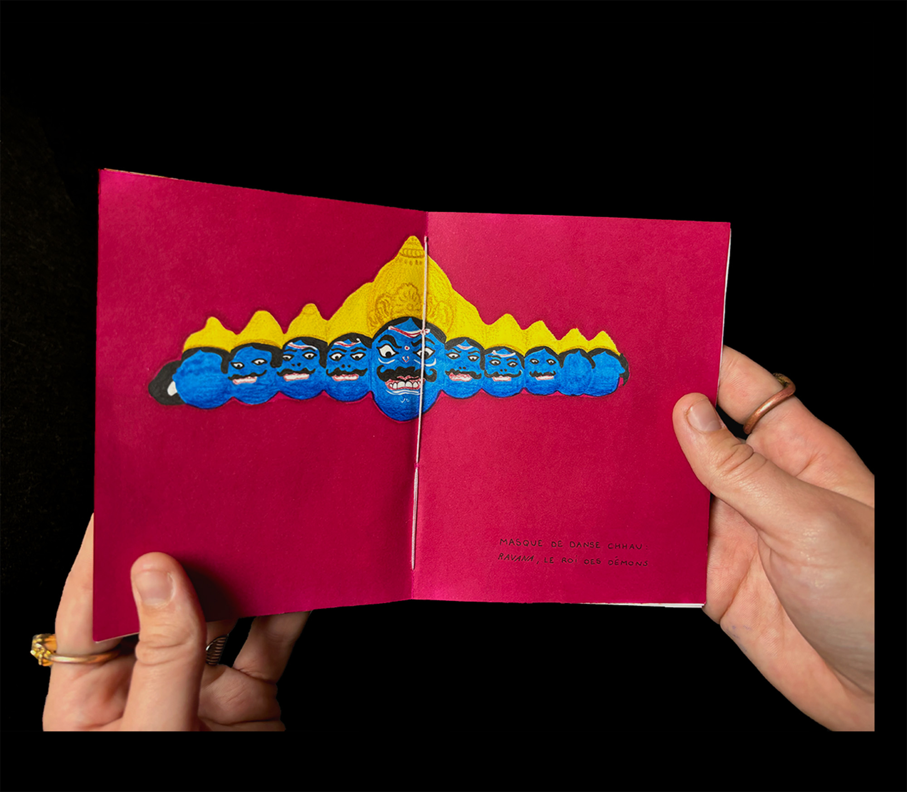
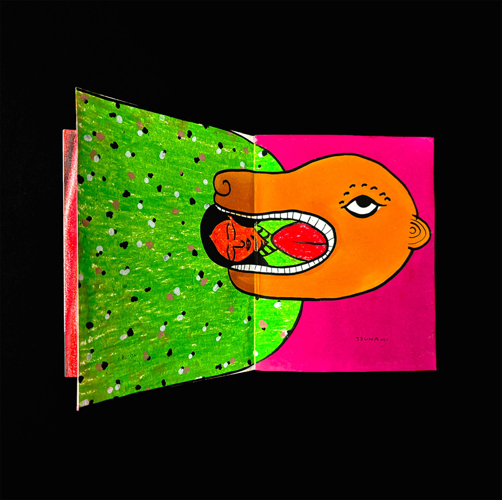
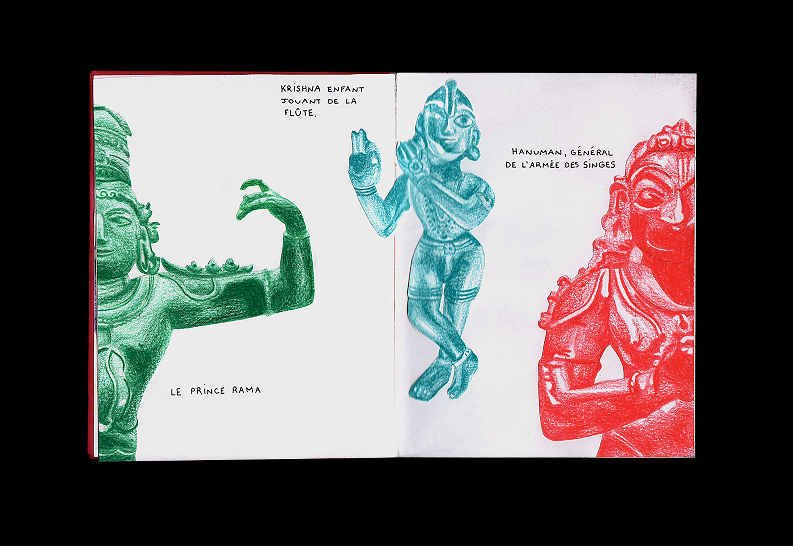
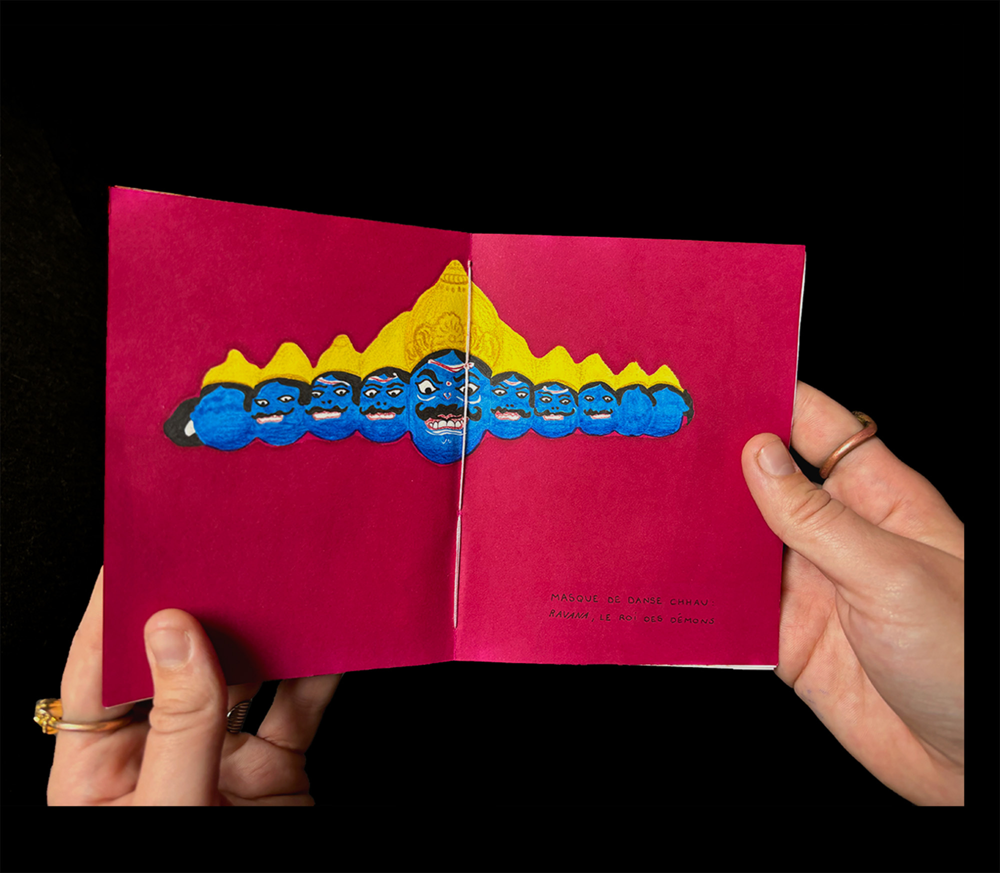
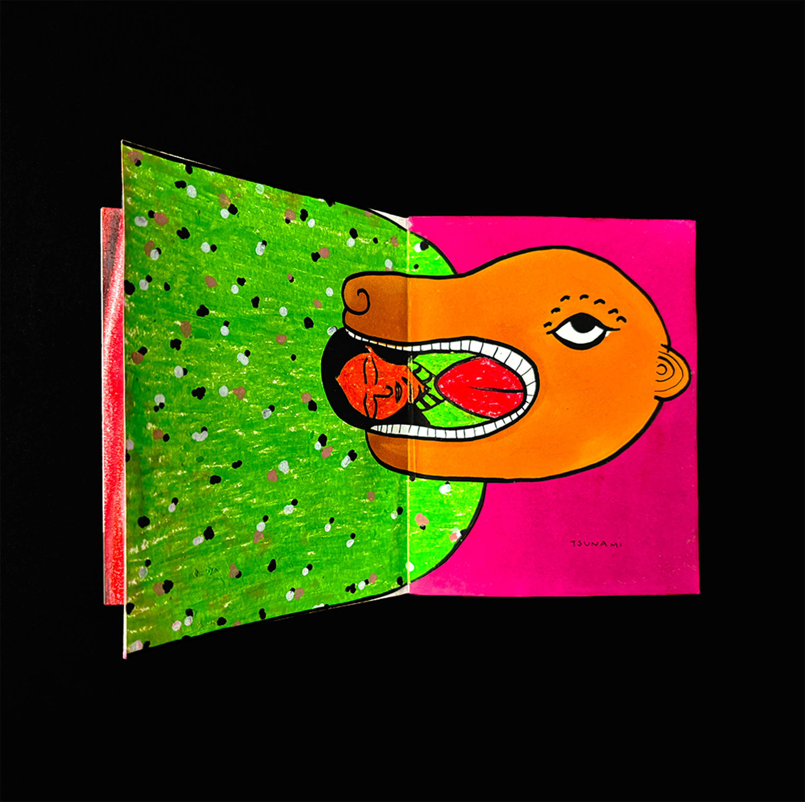
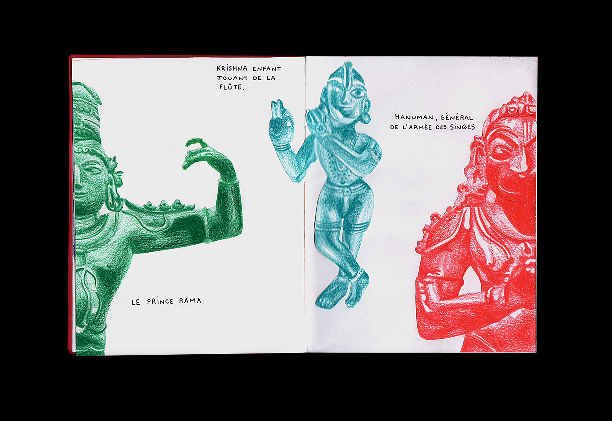
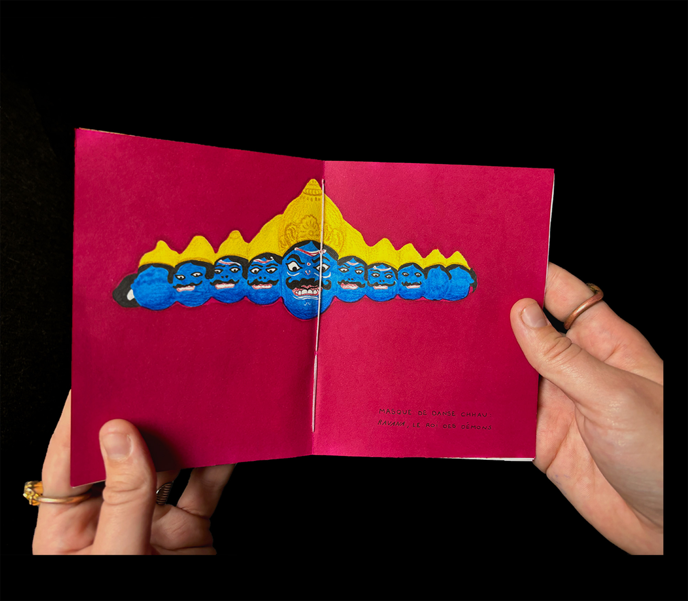
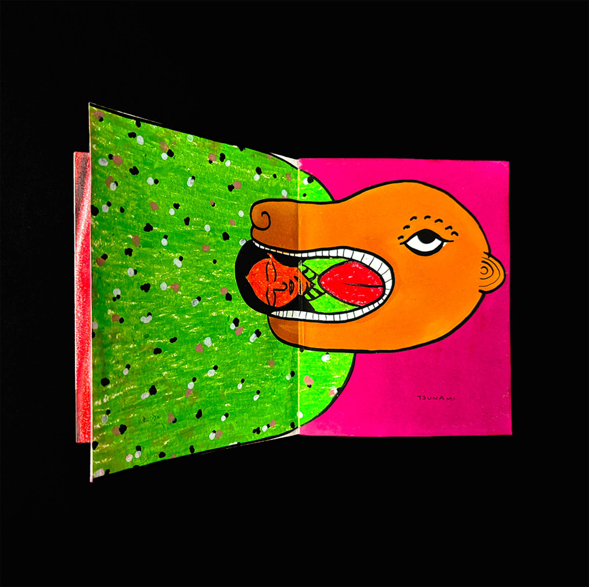
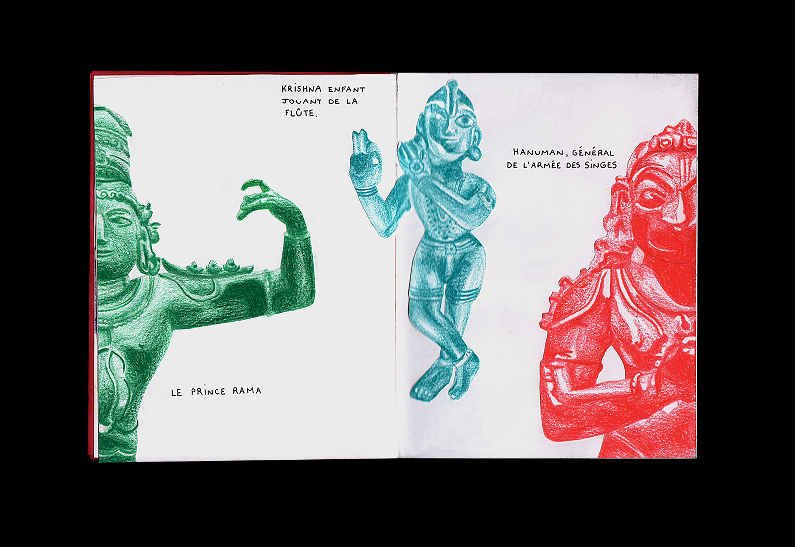
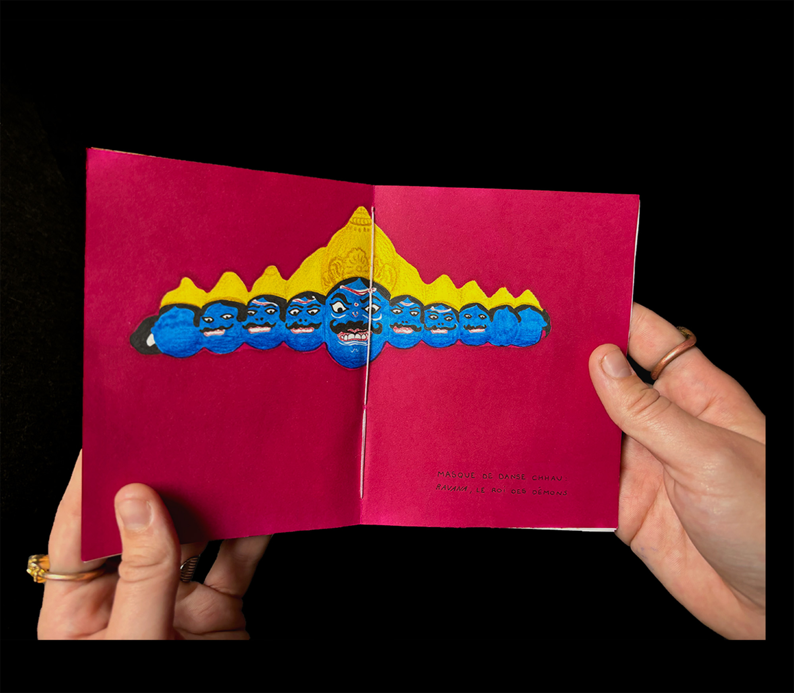
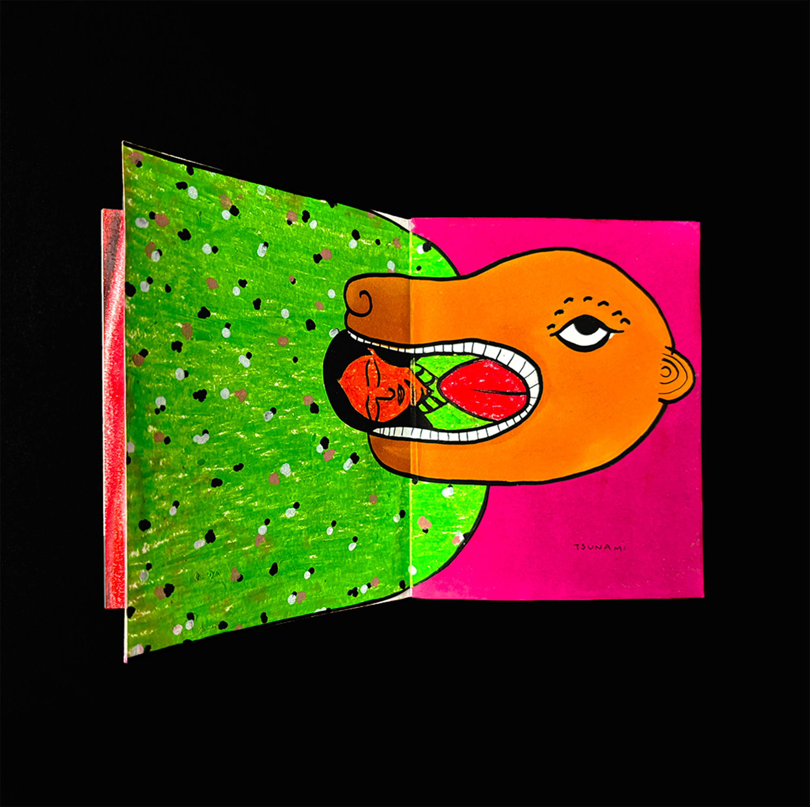
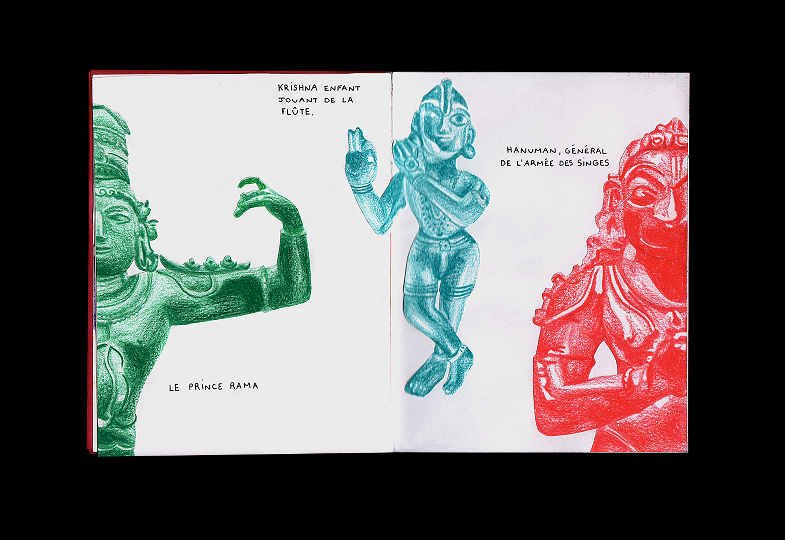